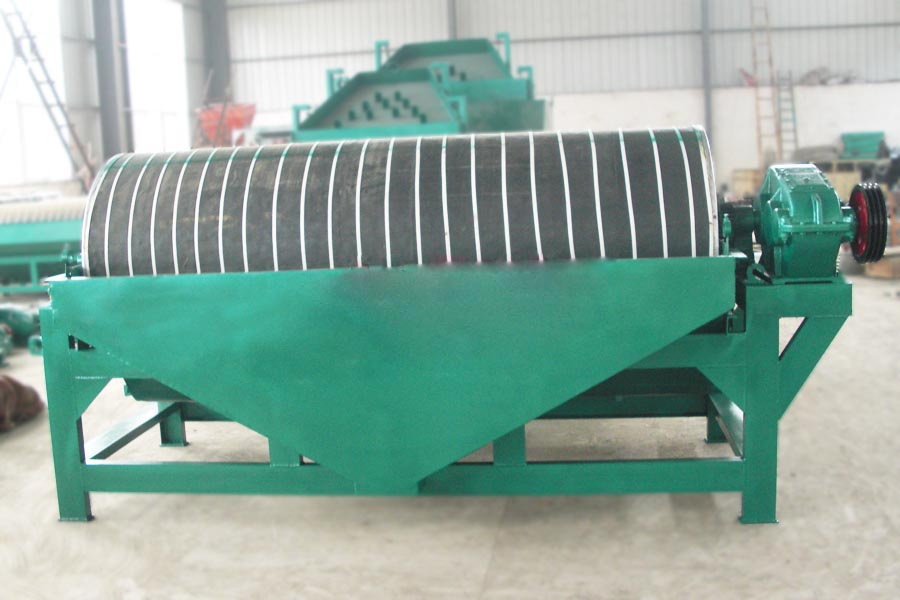
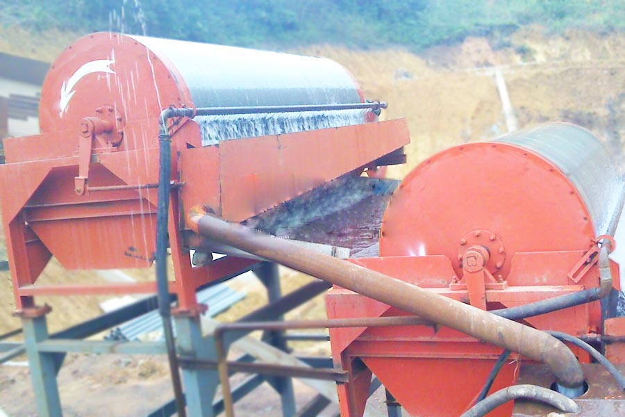

- Home >
- benefication plant >
- black powder magnetic separators

Construction waste crushing production line

Mobile construction waste crushing station for urban construction waste crushing.
black powder magnetic separators
black powder magnetic separators Profile
black powder magnetic separators is suitable for mining metallurgical and mining beneficiation, concentrator and other enterprises and institutions and individual users, for sorting of fine particles of magnetic minerals, or to remove non-magnetic minerals mixed in magnetic minerals.

Wet permanent magnet drum magnetic separator Introduction
Wet permanent magnetic drum magnetic separator magnetic separator iron ore concentrator is a widely used, it is suitable for sorting the strong magnetic minerals. Wet permanent magnet drum magnetic separator in accordance with the tank body is divided into downstream, counter-style, semi-countercurrent three. Wet permanent magnet drum magnetic separator magnetic separation plant outside except as sorting equipment, in recent years, also used as a filter in front of enrichment equipment to replace the magnetic dehydration trough.
black powder magnetic separators Technical Data
| Model | Diameter(mm) | Tube length(mm) | Cylinder speed(r/min) | Feeding size(mm) | Magnetic field intensity(GS) | Capacity(t/h) | Power(KW) |
| CTB6012 | 600 | 1200 | <35 | 1-0 | 1400 | 3 | 1.5 |
| CTB6018 | 600 | 1800 | <35 | 1-0 | 1500 | 6 | 2.2 |
| CTB7518 | 750 | 1800 | <35 | 2-0 | 1500 | 10 | 2.2 |
| CTB9018 | 900 | 1800 | <35 | 2-0 | 1600 | 20 | 3 |
| CTB9021 | 900 | 2100 | <35 | 2-0 | 1600 | 30 | 3 |
| CTB9024 | 900 | 2400 | <28 | 2-0 | 1600 | 35 | 4 |
| CTB1018 | 1050 | 1800 | <20 | 2-0 | 1700 | 40 | 5.5 |
| CTB1021 | 1050 | 2100 | <20 | 2-0 | 1700 | 45 | 5.5 |
| CTB1024 | 1050 | 2400 | <20 | 2-0 | 1700 | 50 | 5.5 |
| CTB1218 | 1200 | 1800 | <18 | 3-0 | 1700 | 60-120 | 5.5 |
| CTB1224 | 1200 | 2400 | <18 | 3-0 | 1700 | 70-150 | 7.5 |
| CTB1230 | 1200 | 3000 | <18 | 3-0 | 1700 | 80-180 | 7.5 |

black powder magnetic separators Features
Permanent magnet drum magnetic separator cylinder surface magnetic field strength much higher than ordinary permanent magnetic separator, easy operation and maintenance management, with significant energy saving performance when all types of concentrator field use. The permanent magnet drum magnetic separator drum magnetic separator tank can be equipped with three kinds, namely, half countercurrent tank (CTB), downstream slot (CTS) and countercurrent tank (CTN), to accommodate different sorting requirements. Semi-black powder magnetic separators countercurrent tank suitable for ore particle size of 0.5 ~ 0mm of roughing and selected, especially for particle size selection 0.15 ~ 0mm minerals; downstream groove permanent magnet drum magnetic separator is suitable for ore particle size of 6 ~ 0mm of roughing and selection; countercurrent trough permanent magnet drum magnetic separator is suitable for ore particle size of roughing and scavenging 0.6 ~ 0mm, and recovered heavy medium coal preparation industry. The permanent magnet drum magnetic separator using professional computer software optimized design, reasonable structure, simple installation, high ease of use, sorting efficiency! Select kun jump black powder magnetic separators, improve economic efficiency concentrator!
Leave Me A Message, Now
If you have any questions regarding equipment prices, production line configuration or other problems, you can send a message to us, we will contact you soon.